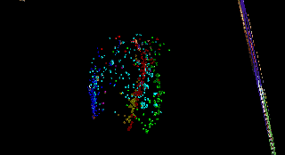
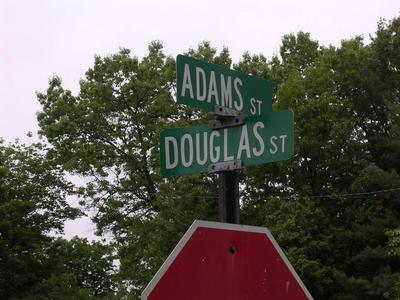
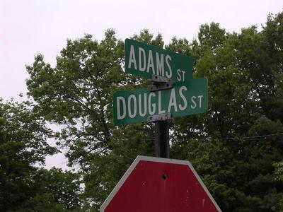

In September, I'll be travelling to Bilbao Spain to take part in Recommenders 06 - The Present and Future of Recommender Systems where I'll be speaking about content-based music recommendation. I'm rather excited about this event. The hosts SPRI, MusicStrands, and IIIA-CSIC, have put together an excellent program with speakers from industry (Yahoo, Netflix, IBM, MusicStrands, Ask.com, Sun) and from Academia (even Mr. Long Tail himself, Chris Anderson will speaking). I'm really looking forward to meeting all of these folks in person and spending some quality time diving into recommender systems. It is shaping up to be a great event.
Friday Jun 23, 2006
In September, I'll be travelling to Bilbao Spain to take part in Recommenders 06 - The Present and Future of Recommender Systems where I'll be speaking about content-based music recommendation. I'm rather excited about this event. The hosts SPRI, MusicStrands, and IIIA-CSIC, have put together an excellent program with speakers from industry (Yahoo, Netflix, IBM, MusicStrands, Ask.com, Sun) and from Academia (even Mr. Long Tail himself, Chris Anderson will speaking). I'm really looking forward to meeting all of these folks in person and spending some quality time diving into recommender systems. It is shaping up to be a great event.
Thursday Jun 22, 2006
An article in the Digital Music Weblog describes the Platinum Blue Music Intelligence system that claims to provide a crystal ball for the music industry . According to Platinum Blue they can
Platinum Blue is not the first company to make a system that tries to predict hit songs. Hit Song Science also has a system that can tell you whether a song 'sounds like' a hit song.
Similarly, in the academic world, there have been some investigations along these lines. ISMIR 2005 published "Automatic Prediction of Hit Songs" by Beth Logan. In this paper, Beth describes using Support Vector Machines and boosting classifiers to explore if there is some distinguisable thread connecting hit songs. Her results were 'better than random' and that lyric features were more effective than audio features for predicting hits. She concludes by saying that there is indeed some distinguishable thread connecting hit songs and that one cannot simply dismiss claims by commercial ventures such as 'Hit Song Science" as impossible.
Personally, I think that in today's music world, a 'hit' is much more dependent on the facial features and figure of the performer than the music or lyric content. Even more important (and even less measurable) is the social network that a song percolates through. In the book Six Degrees - The Science of the Connected age, Duncan Watts observes that a new idea (or a new song) is like a seed or trigger. Seeds of change, like their biological counterparts are a dime a dozen. Only one in a million may grow to fruition and
Duncan says that the difference between a hugely successful innovation and an abject failure can be generated entirely through the dynamics of interactions between players who might have nothing to do with its introduction. In a world where individuals make decisions based not only on their own judgements but also on the judgements of others, quality is not enough.
So perhaps the best thing that these automated hit detectors can do is to tell us which songs have no possibility to become a hit. They can be the Simon, Randy and Paula that tell us which songs don't have a chance, the songs that should pack up their things and go back to Smalltown Arkansas.
"detect
and analyze the underlying mathematical patterns contained in a song.
This knowledge, encompassing 30+ parameters including, pitch, melody
and cadence, allows a song to be easily compared to other songs. In
this way, the music market, which has often seemed the purview of the
alchemist, is now open to rational analysis."
Platinum Blue is not the first company to make a system that tries to predict hit songs. Hit Song Science also has a system that can tell you whether a song 'sounds like' a hit song.
Similarly, in the academic world, there have been some investigations along these lines. ISMIR 2005 published "Automatic Prediction of Hit Songs" by Beth Logan. In this paper, Beth describes using Support Vector Machines and boosting classifiers to explore if there is some distinguisable thread connecting hit songs. Her results were 'better than random' and that lyric features were more effective than audio features for predicting hits. She concludes by saying that there is indeed some distinguishable thread connecting hit songs and that one cannot simply dismiss claims by commercial ventures such as 'Hit Song Science" as impossible.
Personally, I think that in today's music world, a 'hit' is much more dependent on the facial features and figure of the performer than the music or lyric content. Even more important (and even less measurable) is the social network that a song percolates through. In the book Six Degrees - The Science of the Connected age, Duncan Watts observes that a new idea (or a new song) is like a seed or trigger. Seeds of change, like their biological counterparts are a dime a dozen. Only one in a million may grow to fruition and
... not because that one bears some special unique quality, but because it lands in the right place.
So it is for social seeds as well. What makes success
difficult to predict is that success has less to do with the particular
vision than with the pattern of interactions into the midsts of which
their pinprick falls. In other words, the success of a song has
less to do with the music, and more to do with the social network that
the song moves through."
Duncan says that the difference between a hugely successful innovation and an abject failure can be generated entirely through the dynamics of interactions between players who might have nothing to do with its introduction. In a world where individuals make decisions based not only on their own judgements but also on the judgements of others, quality is not enough.
So perhaps the best thing that these automated hit detectors can do is to tell us which songs have no possibility to become a hit. They can be the Simon, Randy and Paula that tell us which songs don't have a chance, the songs that should pack up their things and go back to Smalltown Arkansas.
Wednesday Jun 21, 2006
Sometime during the first quarter of 2006 Apple sold its 50 millionth iPod. Right around the same time, Apple celebrated selling its 1 *billionth* song on iTunes. A phenomenal achievement. Or was it? Dividing the the billion songs by the 50 million iPods yields a grand total of an average of 20 songs sold by Apple per iPod. So after spending $200 or $300 or even more on a luxury music player, the average person is only spending $20 to put iTunes music on it.
I've had an iPod for a couple of years now. I have probably about 5,000 songs on it. I have always considered myself atypical in that I had purchased just a handful of songs from iTunes. A quick check shows that I have purchased only 51 songs from iTunes, less than two per month. However, this means that I purchase iTunes songs 2.5 times the rate of the average iPod owner. So instead of being a rare iTunes shopper, I'm a frequent buyer!
One has to wonder if Apple is making any money from those billion songs. If the typical iPod user is just buying one iTunes song per month, the credit card transaction fees have to be eating up any potential profits.
Now, if Apple decided to offer an all-you-can-eat plan like Napster or Yahoo, I'm guessing that they'd be able to convert a non-insignificant fraction of their 50 million iPod owners to $10 per month subscribers. At the same time, the Napsters, Yahoos and Rhapsodies are hoping that the DRM flap that Apple is facing in Europe will end with Apple being forced to open up their DRM, if that happens, Apple may be forced to compete and will finally offer up their own subscription service.
Monday Jun 19, 2006
I've
been listening to podcasts ever since iTunes made it easy to load them
on my iPod. I'm subscribed to probably 20 or 30 podcasts, but I
regularly listen to only a few. These span the range from
tech, to movies to music. Some of my favorites are:
- Diggnation - Kevin Rose of Digg.com fame and sidekick Alex Albrecht drinks beer and talks about the most popular stores on Digg. Its like going out for a beer with a couple of geek friends and talking about slashdot (well, it is more interesting than it sounds).
- Filmspotting - (Formerly Cinecast) - what a movie review show should be. Two guys who really like movies talk about their favorites and along the way teach a little bit about cinema.
- Java Posse - All Java all the time. Latest Java news and trends.
- Gillmor Gang - Skip the first five minutes, and listen to these guys opine about the state of IT, the web, and the players. Steve Gillmor, the host, is probably the most cantankerous guy you'll ever hear, but all of the other guests stick to their guns and argue their points convincingly. Suprisingly, I learn quite a bit from this show.
- TWIT
- This Week in Tech - Part of the Leo Laporte Podcasting empire, a
panel show where various podcasters talk about the week's tech news.
- Inside the Net - Part of the TWIT network ... weekly interviews with the movers and shakers in the web 2.0 world
- AfterTV- converstations about media, culture and technology. Jeremy pointed me at this one. Be sure to check out the June 5th panel discussion on the Future of Music. A great show.
Monday Jun 12, 2006

Cover songs have an interesting place in the world of Music Information Retrieval. A good cover song is very similar to the original in one axis, but usually very different on another axis. As such they provide excellent examples of the difficulties inherent in music similarity. A cover is clearly similar to the original (its ths same song!), but is still very different (think about Devo's cover of the Rolling Stones (I can't get no) Satisfaction).
MIR researcher Doug Eck put together an excellent demonstration: The Many Moods of My Favorite Things. that collects a number of different versions of the Sound of Music classic.
Affirming the importance of covers in MIR, this year's MIREX (Music Information Evaluation eXchange) (the TREC of MIR) is considering offering a 'cover song contest', where the goal is, given a seed song, find the cover song among hundreds of other songs. It's an interesting problem ... I'm not sure how the traditional machine learning techniques will apply to this task.
I saw on digg.com that WMFU has put together a list of 101 covers of the venerable stadium classic: Stairway to Heaven. There's version by Dolly Parton, Frank Zappa, Dread Zeppelin, the London Symphony and Mary Schneider, Yodeling Queen of Australia, as well as the infamous Gilligan's Island version. The version by the Hard-ons will make anyone who has ever worked in a music store wince from the memory of every 15-year-old trying out a guitar.
Sunday Jun 11, 2006
Adam points me to Musicovery a music discovery tool similar to MusicPlasma that lets you explore a music similarity space in a way very similar to MusicPlasma, but with the added feature that you can actually listen to music. The similarity to MusicPlasma is not a coincidence, both were developed by Frederic Vavrille.

The music similarity model seems to be based on a 2D mood scale similar to the Thayer mood model.
Musicovery is a pretty compelling music discovery tool. It is the only interactive tool that allows you to listen to music (sites like last.fm and Pandora give you a linear, one-song-at-a-time experience due to internet streaming licensing requirements). I'm not sure how Musicovery is licensing their music to allow interactive play like this, but it is a clear improvement over the Pandora/Last.fm style. I hope we'll see more sites like this.
There's absolutely no supporting documentation on the site so it is hard to tell how things work, how their similarity is determined (automatically, socially or by human editors), nor is it clear how deep the music catalog (although there seems to be a wide range of genres covered).
I was never a fan of MusicPlasma, I though it was slow, the similarity was trivial and you couldn't listen to the music. Now Musicovery has addressed all of these issues giving us a compelling music discovery tool that is fast, uses an interesting notion of similarity and most important of all, lets you listen and interact with the music. 5 stars!
Wednesday Jun 07, 2006
There's an article on Sun.com about the recent Sun Labs open house: What's cooking in Sun's Kitchen.
I spent most of my time at the open house giving demos and
talking to folks about music search, so I didn't get to see any of the
other demos or talks. I did talk to some of the Spots folks. These devices are really cool.
Thursday Jun 01, 2006
This week a bunch of us from the East coast labs have travelled to the Menlo Park campus for the annual Sun Labs Open house. This is an event where the folks in the labs get to show off some of their stuff to folks within Sun. I'll be demoing the 'Search Inside the Music' project - which is a content-based music recommender/browser and exploration tool that includes a number of visualizations of the 'music space'. Here's a visualization from Search Inside the Music that represents a music collection in a 3 dimensional music space:

If you work at Sun in California, be sure to come on by, I've got a great spot right next to the ever popular and exciting Blurbalyzer (which is the coolest site on the net).
Sunday May 28, 2006
Thursday May 25, 2006

ExtremeTech has a head-to-head comparison of 8 music recommenders: MusicStrands, LivePlasma, UpTo11.net, Audiri, Pandora, Mercora, Yahoo LAUNCHcast Radio, and last.fm. Not surprisingly, last.fm gets the nod. Here's what they say:
Last.fm is by far the best out there,
possessing a huge library of music, a great community, and a
recommendation feature that will blow you away. Last.fm pretty much
sweeps our five main criteria.
Check the article out here: Free Music Recommendation Services. (first seen on digg.com)
It is towel day today.
I forgot my towel at home ... but I'll be sure to visit the local
Douglas Adam's memorial. Here's a picture I took a few years back:


The other day I suggested that the new Nike+iPod combo should pick tracks based upon your running cadence. Well... it looks like they are looking to patent just that. (Thanks Jeff for the tip).
Tuesday May 23, 2006
| By now, most of you have probably seen the new Nike + iPod sport kit that lets you use your iPod nano as a multi-hundred dollar pedometer. The feature that seems to be missing, that any MIR fan will be looking for, is the 'query by cadence' ... that is, having the iPod pick songs that match your pace. When you are running up that long hill, a slower song should be queued up, and when you are going down the other side, a much faster song should be played. Or perhaps they should include a heart rate monitor too, so when you approach heart-attack territory, the iPod can start playing Roberta Flack or Norah Jones. And the real question is, what happens when you wear your Nike/iPod sneakers with wireless transmitter to the airport? |
MusicIP now has a flash-based Music Discovery app called the 'playground'.

With the playground you can browse around their online music collection (about 30,000 tracks), listen to clips of songs, and most interestingly, get a set of 'similar sounding' tracks using the MusicIP song similarity engine. It's a pretty light-weight way to try out their similarity system. For the most part, the playground gives you an interesting similarity set, but does give a clunker every once in a while (does Led Zep's 'Immigrant Song' really sound like 'Just Don't tell Me That' by N'Sync?
Check it out, it is a pretty well-polished interface.
Monday May 22, 2006
All Music is purchasing Mood Logic. Here's the press release. All Music has one of the deepest repositories of music metadata, as well as some excellent playlist generating technology, while Mood Logic has a built up a good collection of social data, an orthogonal set of mood labels as well as a nifty desktop app (unfortunately windows only). MoodLogic was one of the first desktop music recommenders and really broke new ground, but seems to have languished over the last few years (they haven't added a question to their FAQ in over two years). It will be interesting to see where this goes ... perhaps AMG with its metadata and playlist generation technology is thinking about moving onto the desktop. Thanks Zac for the tip.
This blog copyright 2010 by plamere

{kind=link}